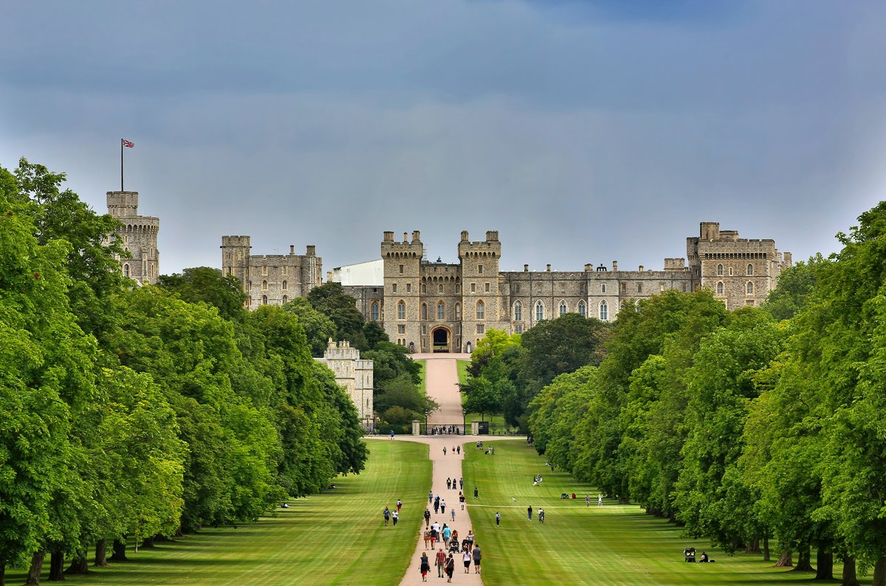
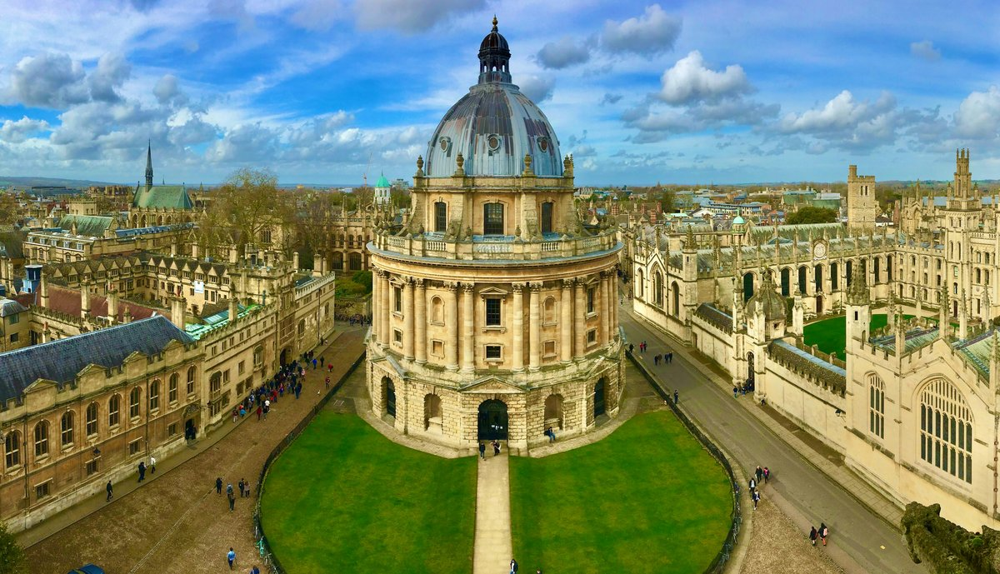
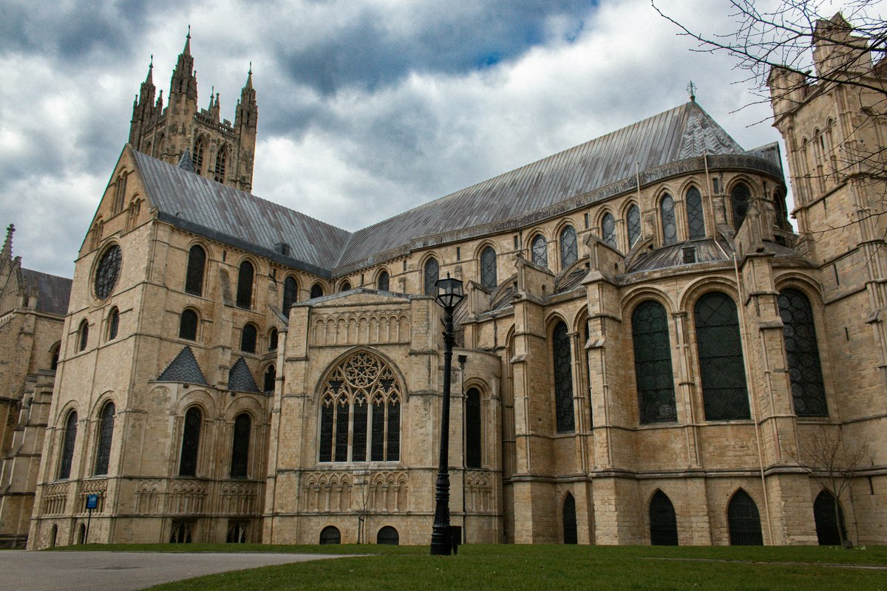
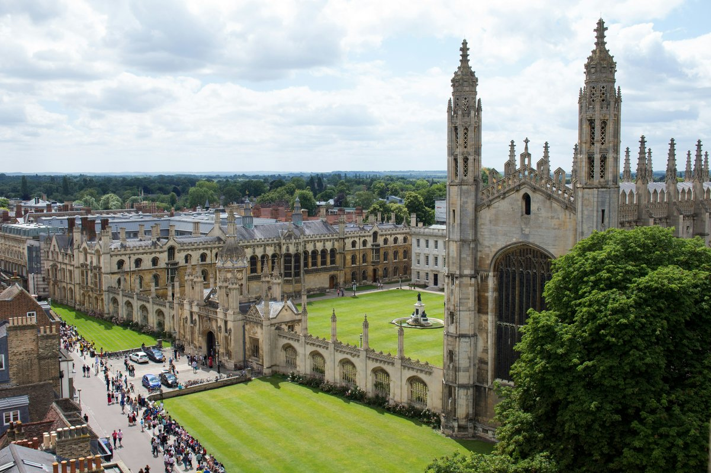
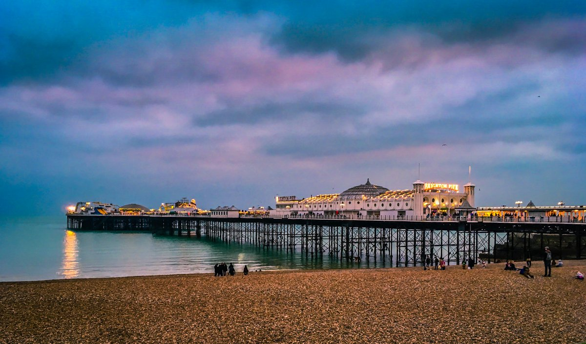

London's surrounded by incredible historic cities, royal castles, and countryside that most visitors never see. But here's the thing: you don't need to join a rushed group tour that crams three destinations into one exhausting day. The best way to explore beyond London is independently, at your own pace.
Why Skip the Group
Day Tours
Those coach tours that promise "Windsor, Bath, and Stonehenge in one day" sound tempting, but here's what actually happens: you spend more time on the bus than at the destinations, get 45 minutes at each place, and follow a guide with a clipboard through crowds of other tour groups.
Independent day trips give you something group tours can't: time to actually experience a place. Wander the cobbled streets without rushing. Duck into a tea shop. Explore at your own curiosity level. Return to London when you're ready, not when the bus schedule dictates.
Group tours: 2 hours travel, 45 minutes exploring, lots of waiting. Independent trips: Take the direct train, spend 4-6 hours exploring, leave when you want. Much better value for your time.
Best Day Trips from London
by Train
Britain's train network makes independent day trips incredibly easy. Most destinations are under 2 hours from London, with regular direct services throughout the day. Here are the best options for first-time visitors and seasoned London explorers alike.
Bath: Georgian Architecture & Roman History
Travel time: 1h 20m direct from London Paddington
Best for: Architecture lovers, history enthusiasts, Jane Austen fans
Bath is the perfect day trip for anyone who wants to step back into Georgian England. The entire city center is a UNESCO World Heritage site, with honey-colored limestone buildings that have barely changed since Jane Austen lived here in the early 1800s.
You'll find the Roman Baths (the original thermal springs that gave the city its name), Bath Abbey with its soaring fan vault ceiling, and the Royal Crescent - the most photographed street in Britain. The best part? It's all walkable from the train station.
Start with the Roman Baths when they open at 9am to avoid crowds. The audio guide is excellent, but for the full story of how Bath became Britain's most elegant city, a self-guided walking tour reveals the connections between buildings most visitors miss.
Windsor: Royal Castle & Thames-side Town

Travel time: 50 minutes direct from London Paddington
Best for: Royal history fans, castle enthusiasts
Windsor Castle is the world's oldest occupied castle and the King's weekend residence. When the Royal Standard flies, he's home. The State Apartments contain works by Rembrandt, Rubens, and Van Dyck, while St George's Chapel is where Prince Harry married Meghan Markle.
The castle dominates the small town of Windsor, but there's more here than just royal history. Windsor Great Park stretches for miles along the Thames, and the town itself has some of the finest Tudor buildings in England.
Oxford: City of Dreaming Spires

Travel time: 1 hour direct from London Paddington
Best for: University history, architecture, Harry Potter fans
Oxford isn't just a university - it's 38 independent colleges spread throughout a medieval city. Each college has its own history, architecture, and stories. Some date back to the 13th century and look exactly like the Hogwarts sets (because they were used as filming locations).
The challenge with Oxford is knowing which colleges to visit and understanding what you're actually looking at. The Bodleian Library, Christ Church Hall, and the covered market each have centuries of stories that transform them from pretty buildings into places where history actually happened.
College opening times vary daily and some charge entry. Check ahead or follow a route that shows you the highlights without needing to go inside - the exteriors and courtyards tell most of the story anyway.
Canterbury: Medieval Cathedral City

Travel time: 1h 30m from London St Pancras
Best for: Medieval history, pilgrimage routes, literary connections
Canterbury Cathedral is one of the most important religious sites in England - the mother church of the Anglican faith and the site where Thomas Becket was murdered in 1170. The cathedral is stunning, but Canterbury's real charm is wandering the medieval streets that pilgrims have walked for centuries.
This was the destination of Chaucer's Canterbury Tales, and you can still see sections of the original Roman walls and medieval timber-framed buildings that line the narrow streets.
Cambridge: Colleges & River Punting

Travel time: 1 hour from London King's Cross
Best for: University architecture, riverside walks, peaceful exploring
Cambridge feels more relaxed than Oxford, with the River Cam winding through the college grounds. King's College Chapel is one of the finest examples of late Gothic architecture in Europe, while the Mathematical Bridge and Bridge of Sighs connect the colleges over the river.
Punting on the Cam gives you a unique perspective of the college backs - the gardens and buildings that face the river and are invisible from the street.
Brighton: Seaside Regency & Victorian Pier

Travel time: 1 hour from London Victoria or London Bridge
Best for: Seaside atmosphere, Royal Pavilion, independent shops
Brighton became fashionable when George IV built the Royal Pavilion - an extraordinary Indo-Islamic palace on the English coast. The contrast between the oriental domes and the Regency terraces creates one of Britain's most distinctive cityscapes.
Beyond the Pavilion, Brighton offers Victorian pier entertainment, the maze of independent shops in The Lanes, and the first breath of sea air you'll get after days in London.
How to Plan Your
Independent Day Trip
Timing: Most destinations work best as 6-8 hour trips. Leave London mid-morning, explore all day, return early evening. This gives you proper time to see things without rushing.
Tickets: Book train tickets in advance for cheaper fares, or buy on the day for flexibility. Off-peak returns are usually best value if you're not traveling during rush hours.
What to Pack: Comfortable walking shoes, weather-appropriate clothing, portable phone charger. Most historic city centers are compact and walkable.
Many attractions offer combined tickets if you're visiting multiple sites. Bath has Roman Baths + Fashion Museum combos. Oxford colleges often have joint tickets. Check before you start exploring.
Making the Most of
Your Time
The biggest advantage of independent day trips is being able to focus on what actually interests you. Love architecture? Spend three hours exploring Bath's Georgian crescents. Fascinated by medieval history? Canterbury Cathedral and its surroundings can fill an entire day.
Unlike group tours that allocate fixed time to each stop, you can adjust your day based on what you discover. Found an amazing museum? Stay longer. Weather turned? Duck into a cathedral or covered market.
This flexibility is especially valuable in historic cities where the real treasures are often the things you stumble across: a hidden college courtyard, a Roman wall embedded in a shop front, a Tudor building squeezed between Georgian terraces.
Beyond the Tourist
Trail
Group tours stick to the obvious highlights because they have to keep moving. Independent exploration lets you discover the layers beneath the surface.
In Bath, you can trace how Roman engineering influenced Georgian city planning. In Oxford, you can understand why certain colleges were built where they are and how the medieval street layout still shapes the modern city. In Canterbury, you can follow the actual pilgrimage route through streets that haven't changed since Chaucer's time.
These connections between past and present, the stories behind the stones, the reasons why things are where they are - this is what transforms sightseeing into understanding.
Start Planning Your
Day Trip
Choose your destination based on your interests, book your train tickets, and prepare to explore at your own pace. No groups, no rushing, no waiting for others. Just you and centuries of British history waiting to be discovered.
Explore Bath → Discover Oxford →